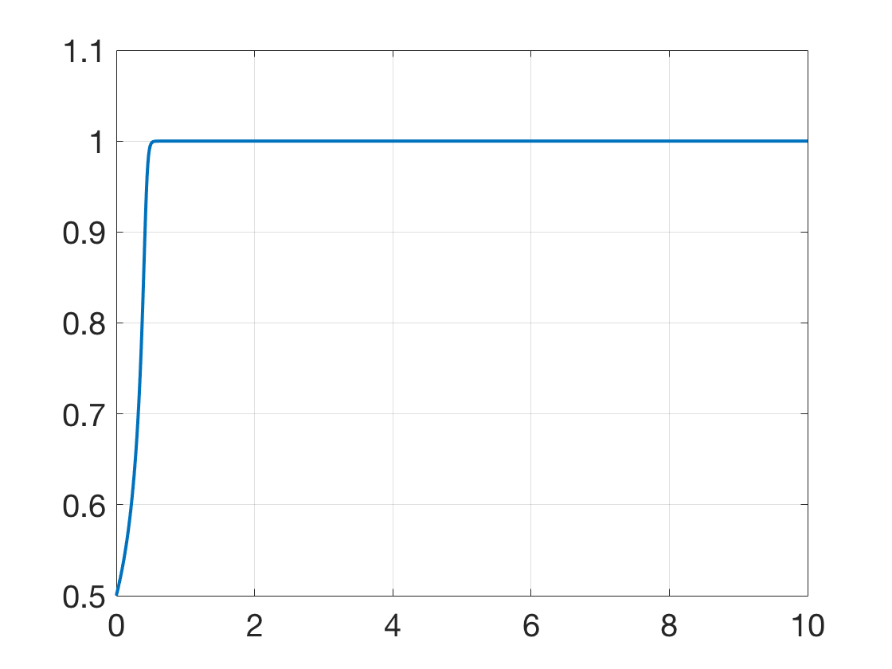

Additional Examples 6.6
1 Using initial condition \(y(0)=1\) and step size \(h=1/4\), calculate the Backward Euler approximation to \(y' = ty\) on the interval \([0,1]\). Find the error at \(t=1\) by comparing with the exact solution.
The Backward Euler formula is \(w_{i+1} = w_i+hf(t_{i+1},w_{i+1}) = w_i+ht_{i+1}w_{i+1},\) or \(w_{i+1} = w_i/(1-ht_{i+1}).\) Following the rule yields
\begin{eqnarray*}
w_0 &=& 1\\
w_1 &=& \frac{w_0}{1-ht_1} = \frac{1}{1-\frac{1}{16}} = \frac{16}{15} \approx 1.0667\\
w_2 &=& \frac{w_1}{1-ht_2} = \frac{16/15}{1-\frac{1}{8}} = \frac{128}{105} \approx 1.2190\\
w_3 &=& \frac{w_2}{1-ht_3} = \frac{128/105}{1-\frac{3}{16}} = \frac{2048}{1365} \approx 1.5004\\
w_4 &=& \frac{w_3}{1-ht_4} = \frac{2048/1365}{1-\frac{1}{4}} = \frac{8192}{4095} \approx 2.0005\\
\end{eqnarray*}
The exact solution is \(y=e^{t^2/2}\) and \(y(1) =e^{0.5} \approx 1.6487,\) resulting in error \( \approx 0.3518.\)
2 Consider the IVP
\[ \left\{
\begin{array}{l}
y'=10y^5-10y^{10}\\
y(0)=1/2
\end{array} \right. \]
on the interval \([0,10]\).
Compare the variable step-size NEED TO FIX XXXX solvers ode23s and ode45, with RelTol = 1e-6. Do both methods approach the stable equilibrium \(y=1\) at \(t=1\)?
Report the number of steps needed for each method. What happens for RelTol = 1e-8?
The IVP is stiff, which causes problems for conventional methods such as Runge-Kutta. The Matlab commands
opts=odeset('RelTol',1e-6);
[t,y]=ode23s(@(t,y) 10*y^5-10*y^(10),[0 10],0.5,opts);
length(t)
plot(t,y,'LineWidth',2)
give the plot shown below, and the number of steps equals 122. Replacing ode23s with ode45 yields a similar plot, but 657 steps are required. For both methods, the approximate solution approaches \(y=1\).
Changing to RelTol = 1e-8 yields similar results for ode23s, but ode45 fails to converge.
